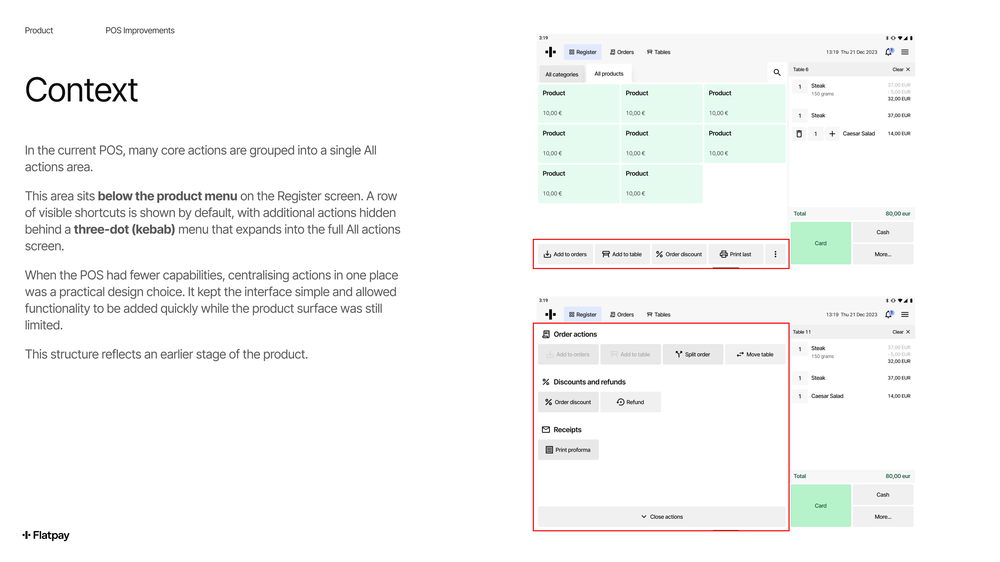
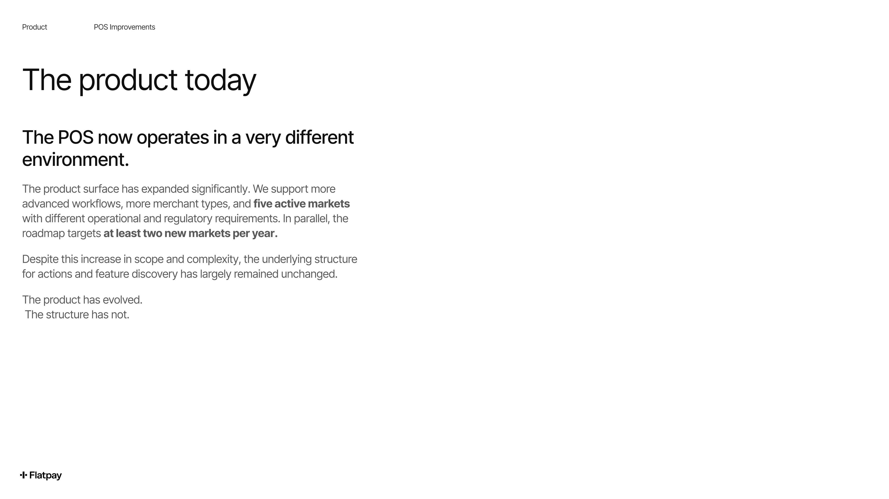
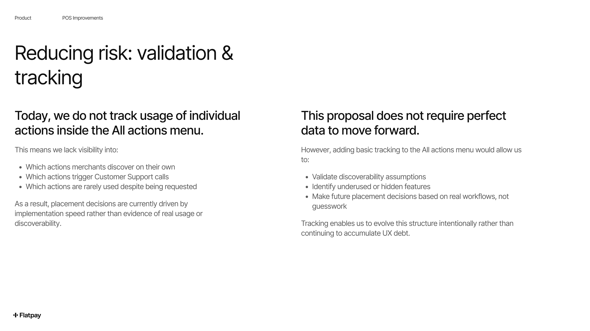
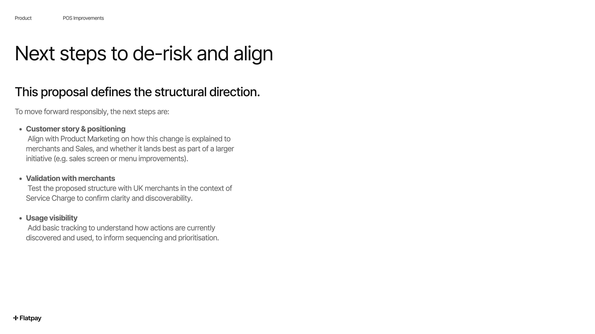
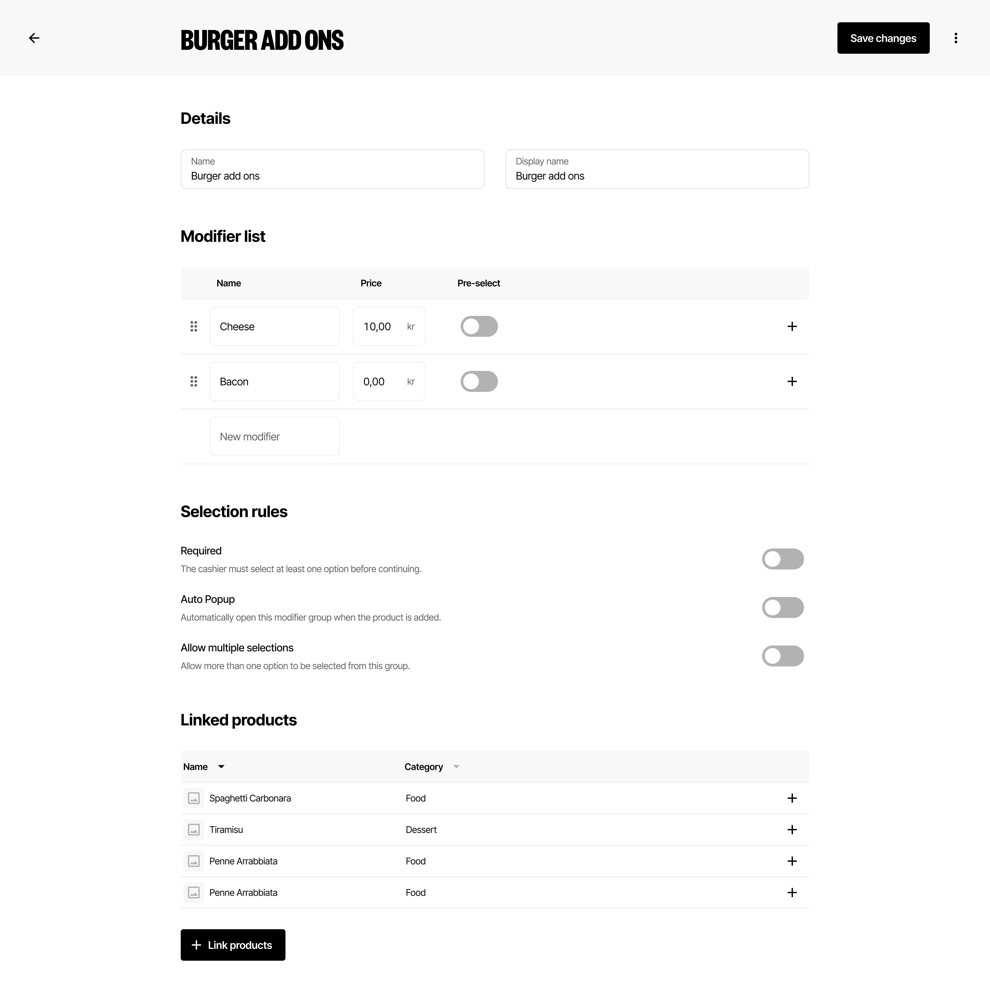
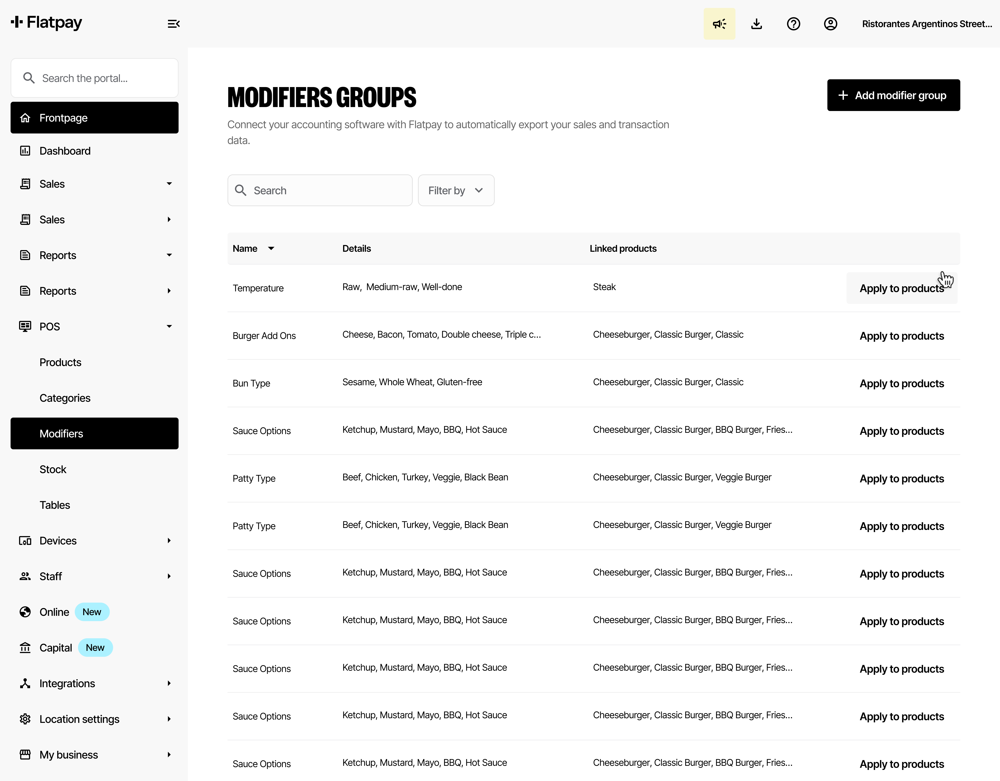
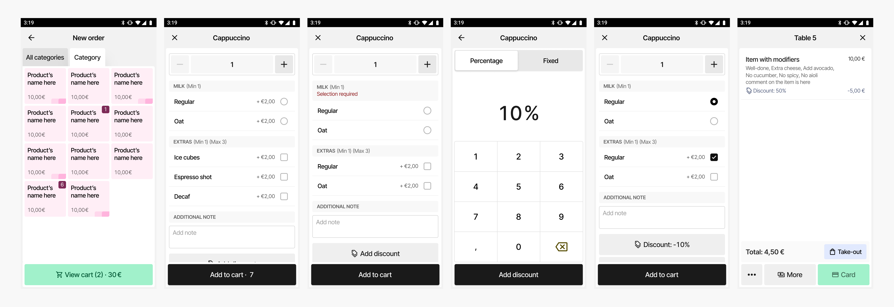
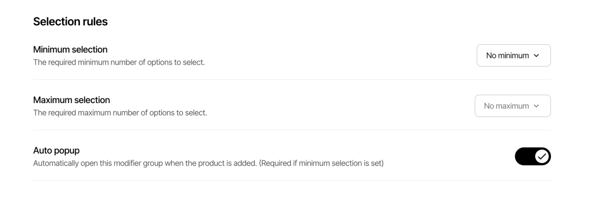

01
Market activation rate
Geo Unlocks
% of new-market POS merchants reaching target TPV within 21 days of installation.
Flatpay — Product & UX Design
Flatpay's product spans PAY, POS, mPOS and a merchant portal across DK, FI, DE, IT, FR, UK and NL. The work below traces two of the value streams that shaped the 2026 roadmap — expanding into new geographies, and unlocking the product for more complex merchants — from research to shipped design.
Value streams4 north-star metrics
01
Geo Unlocks
% of new-market POS merchants reaching target TPV within 21 days of installation.
02
Conversion Unlocks
P50 / P95 time from onboarding to a merchant's first live sale across core flows.
03
ICP Unlocks
% of POS merchants actively using a newly shipped feature within 30 days of launch.
04
Revenue Unlocks
Revenue captured per euro of total payment volume processed, after costs.
01 — Geo Expansion · Research → Feature design
Geo Expansion is Flatpay's primary growth lever — every new market needs to activate quickly and reach meaningful transaction volume fast. To get there, the team ran in-depth merchant research in two markets ahead of launch: the UK and the Netherlands.
Research · Netherlands
Part of the broader Geo Expansion research portfolio — establishing how Dutch merchants run their businesses, what payment habits and POS expectations look like locally, and where Flatpay's current product would need to flex ahead of a launch.
Research · United Kingdom
Three days of cold, in-person merchant visits across Fulham Road, Hammersmith, North End Road, Covent Garden and Soho — interviews, observations and photo evidence with F&B, retail and service businesses that fit Flatpay's ICP.
Finding: PAY fits the UK market as-is. POS fits smaller venues without table service — but to compete for venues with table service, Flatpay needed service charge handling, clock-in/clock-out, and an order/transaction history tab.
From UK research to a shipped feature
In-market merchant visits surface that UK table-service venues run on a 12.5% service charge, toggled at checkout and set centrally in the portal — a "must have" to compete.
Findings were weighed against the launch-readiness matrix — service charge landed in the "can't launch without it" tier for both POS and Portal, ahead of nice-to-haves like clock-in/out.
Designed the end-to-end Service Charge flow — manager sets the rate in the Portal, staff toggle it on/off per order at checkout, and it's reflected clearly across receipts and reports.
Used the feature as a forcing function to rethink the POS's "all actions" area more broadly — proposing a clearer, trackable structure rather than another one-off addition.
From the "POS Improvements — All Actions" proposal deck




02 — ICP Unlock · Modifiers
Modifiers let a merchant capture how a customer wants something — "no onions," "extra cheese," "medium rare" — without bloating the menu or the order ticket. It's one of the most-requested features blocking Flatpay from serving more complex merchants, and the foundation for online ordering integrations with platforms like Uber Eats and Wolt.
Design process
Visited three Copenhagen merchants who needed the feature, to validate scope assumptions — e.g. confirming negative values and quantities weren't actually needed for v1.
Mapped how Toast, Lightspeed, Square and Tebi structure modifier groups, settings and POS flows — to ground the design in patterns merchants already know.
Designed the Portal and POS flows by extending Flatpay's existing patterns — keeping setup and checkout familiar rather than introducing new mental models.
Built an interactive prototype of the Portal setup flow to pressure-test the concept early — see it live in the embed below.
Returned to merchants with the PM and a developer. Key learning: "min/max selection" language wasn't clear — more merchant-accessible copy tested better, even at the cost of added complexity.
Selected screens — Portal & POS




Live prototype — adding a modifier group, required & toggle states
Interactive — try adding a new item to a group, and toggling required / multi-select rules. Open full prototype ↗